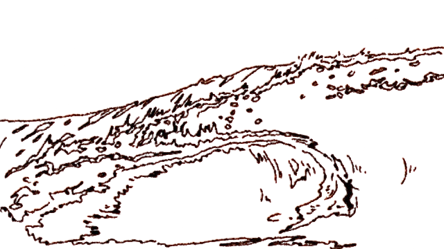

Mon rôle :
Illustratrice, animatrice, gestion du son et de l'image, monteuse.
Ce tout premier court-métrage d'animation est né d'un brief simple : retransmettre l'énergie d'un sport en animation rotoscopique. J'ai choisi le surf, étant moi-même amatrice de ce sport. Pour le style, j'ai utilisé un trait au fusain épais. Je voulais quelque chose d'un peu brouillon et vivant, différent des animations numériques. L'idée était que le trait lui-même semble bouger, comme l'eau ou les cheveux du personnage dans le vent. Visuellement, je suis restée sur un choix très sobre : du noir sur un fond orange. C'est un contraste fort qui permet de bien se concentrer sur le mouvement et les quelques reflets de lumière, sans s'encombrer de couleurs.
Les divers clips - extraits de film comme Point Break - ont été montés et assemblés sur After Effect ; je les ai ensuite image par image, re-dessinés à la main sur Photoshop.
L'animation a été entièrement chorégraphiée sur le titre La Planche de La Femme.
Mon travail a été présenté aux portes ouvertes de mon école, il a donc pu servir d'inspiration pour les plus jeunes et de représentations de cette branche-là du design (le Motion).
Le détail des vagues et de la chevelure ont été particulièrement apprecié.